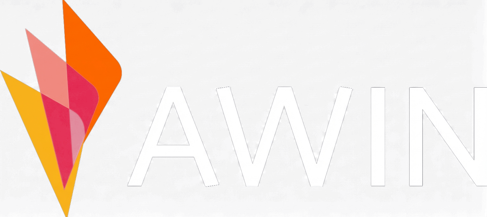

Climbing the Ladder of Abstraction
How do we review an endless stream of agent work?
david@paidiaconsulting.com
Paidia Consulting.
Generalist specialists - from the boardroom to the codebase.
C-suite coaching and AI enablement - supporting leaders and teams to think through how AI affects their practice.
Transformation. Embedding with your team to bring AI into the work you already do - change management and culture change, not just tools.
We build the systems too. Experienced across retrieval-pipeline approaches, agentic workflows and hallucination mitigation.
Hands-on. From bespoke architecture to embedded AI engineering - we work in a way that suits your team.




The higher you go, the fewer characteristics you include - the more things the word refers to.
Read every line.
- Mario Zechner, Pi: "read every f*****g line of critical code".›
Code is a liability.
- Ryan Lopopolo, OpenAI: "code is a liability - become a token billionaire".—
- His team: 1M lines, 5 months, 2-3 people - zero written by hand.›
Alex Volkov named it the Z-L Continuum.
The axis is really a timeline.
The cost of making collapsed.
Producing code went from costly → to nearly free
We've always coped with more code than we can read.
Pair programming. Two people, real time - fewer bugs ever get written.
Adversarial review. A second coding agent, ideally a different model family, reviews the first.
PR review. Doesn't reduce errors - gives you a chance to reject work that still has them.
Tests / CI just automate the gate.
This time, production is unbounded.
- Every old coping mechanism assumed human-paced production. AI breaks them at once.—
- You weren't there to pair, so prevention is gone - and the gate is now facing a firehose.—
- Our old gating mechanisms are insufficient for this challenge - so we have to move them up the abstraction ladder.›
The direction of travel is clearly rightwards and clearly up the abstraction hierarchy.
Nobody's confident they'll still be reading code.
- Volkov: "nobody could give a confident answer that they will still be looking at code in 12 months".—
- Wherever you sit today, the drift is toward L.›
As you move up, review becomes the bottleneck.
- The constraint starts being "can I build it" and becomes "can I review it fast enough".—
- Review doesn't mean read the code:
- —it means seeing if the work is good enough and
- ›whether it does what we wanted.
Auto-close every new contributor's issue and PR.
- By default every new PR or issue is auto-closed.—
- A modern captcha - a contributor must jump through some hoops to prove they're real before being permitted to submit PRs and issues.›
OSS vacation.
- When it gets too much he just stops - declares an "OSS vacation" and pauses maintenance to protect his time.›
Cluster the issue flood into one HTML map.
- Embed every PR and issue (title + description) into a vector → UMAP to 2D → one interactive HTML map.—
- Then review the big clusters - what are all these people actually asking for - instead of individual PRs.›
The bottleneck, in numbers.
pi was acquired by Earendil; Mario now works there with Armin Ronacher.
One reviewer, a queue of AI pull requests.
- The head of engineering at a client - a small expert team that ships a lot of code, very inconsistent.—
- Some engineers use agents well, some don't; for any given PR it's hard to tell whether it was done well.—
- The AI-written PRs are overwhelming - even the PR's own writeup is too much to read, never mind the code itself.›
Her response was to write the standards down.
- She started writing AI coding standards for the team, to reduce the surface area of review.—
- Even so, it is not really sustainable at this level - this is an industry-wide problem.›
- 01 Every PR ships with a demo of the change working
- 02 No agent merge without a human on the strategic calls
- 03 Tests must fail before they pass
- 04 Keep the diff small enough to review
Generation has outrun review.
- Parakhin (CTO, Shopify): PR merges now growing ~30% month on month, up from ~10%.›
The merge question is not "can you explain every line". It is:
Would you be comfortable owning a production incident tied to this pull request?
- You comprehend the software - the architecture, the weak spots, where the bodies are buried. Not every line.›
A CTO running one of the fastest-growing eng orgs says the same.
Jacob Lauritzen, CTO of Legora: writing code was the bottleneck for ~100 years and is now cheap - so review moves up.
- What matters: the impact on systems architecture, design, stability, security boundaries.—
- No strategic change → unleash the agent.—
- A strategic trade-off → a human decides "yes, this is the right direction".›
"If that doesn't change, maybe you don't have to review it at all - just unleash the agent. But if there are strategic trade-offs, then you want a human to be like, yeah, this is the right direction."
Coders are the canary.
- AI is genuinely good at code now, and we use more of it than anyone - so we hit this first.—
- We built the advanced tooling for ourselves, which makes us the canary.—
- Every field doing information work is walking into the same wall.›
Romance authors are already living this.
- Hard Fork covered Alexandra Alter's New York Times piece on AI in romance publishing.—
- The making is no longer the constraint - the judgement and the review are.›
200+ novels in a year.
"Do you still think of yourself as a writer?"
"With AI, I am the creative director… the editor, I'm the boss."
The same move, outside engineering.
Stop reading source line-by-line → review architecture, security, direction.
Stop being nitty-gritty about contract language → "what's our negotiation stance? which risks are we okay with?"
The future of review.
The default surface is wrong.
"Reading large amounts of information on a rich surface is much more pleasant than reading it from a terminal - there's no reason to go back to that part of the 80s."
Lucas Meijer, "A Love Letter to Pi"
A redesign you review by looking.
- Anthropic's Claude Design produced the look and feel for this deck - many variations, never a line of CSS read by hand.—
- For a visual task the review surface is the rendered output - you review it there, not in the code.—
- It's currently the best tool in this space.›
Let the agent map the whole system.
- Swap github.com → deepwiki.com on any public repo and Cognition's Devin reads the whole codebase for you.—
- You get a generated wiki - architecture overview, diagrams, and an "ask the codebase" box answered from the actual source.—
- You review the shape of the system, not the code - before you touch an unfamiliar repo, or to sanity-check one an agent built.›
Make the agent demonstrate it works - from real output.
A slide deck of what the agent did.
- Lucas Meijer ("A Love Letter to Pi") doesn't like reviewing code in a text interface.—
- So his agent builds an HTML deck of what it did - he reviews the walkthrough, not the diff.›
A short video of the work.
- He reviews the finished walkthrough - the final product, not the diffs.›
My experience.
Contract review agent.
- GOSH Charity send every contract to a two-person legal team.—
- Internal app: GenAI checks each one against approved templates, playbooks and charity-sector best practice.—
- Under the value threshold and strongly aligned → auto-approve.—
- Two integrations only: a locked-down web search (allow-listed domains) and one email out.›
I put my attention on the one small AI bit.
- The shell is a standard boilerplate cloud web app - not worth line-by-line attention.—
- The AI in the middle is the only novel part, so that is the risky surface I review - not every line of the plumbing.—
- Rather than dictate it, I go back and forth with the agent - defining and refining until we are on the same page about what I want it to do.
- ·tenant-only auth
- ·a closed network
- ·the agent's only two exits - vetted legal sources, one fixed inbox (i.e. preventing the lethal trifecta)
The agent proposes its plan as a deck.
- Architecture deck: I click through its plan, not a wall of text.—
- I push back and change things - but we stay at the level of the diagram, not the code.—
- I double-check what bites - how it handles authentication, the security boundaries.›
It's all the same move: surfaces you read, not diffs you edit.
- Every one of those was the agent handing you a surface to READ.—
- Thariq Shihipar (Anthropic): "The Unreasonable Effectiveness of HTML" - AI is unreasonably good at communicating to humans.—
- Context in is curated and auto-hydrated; work out is HTML, decks, the surfaces above.›
How do you think we can move up the ladder?
david@paidiaconsulting.com